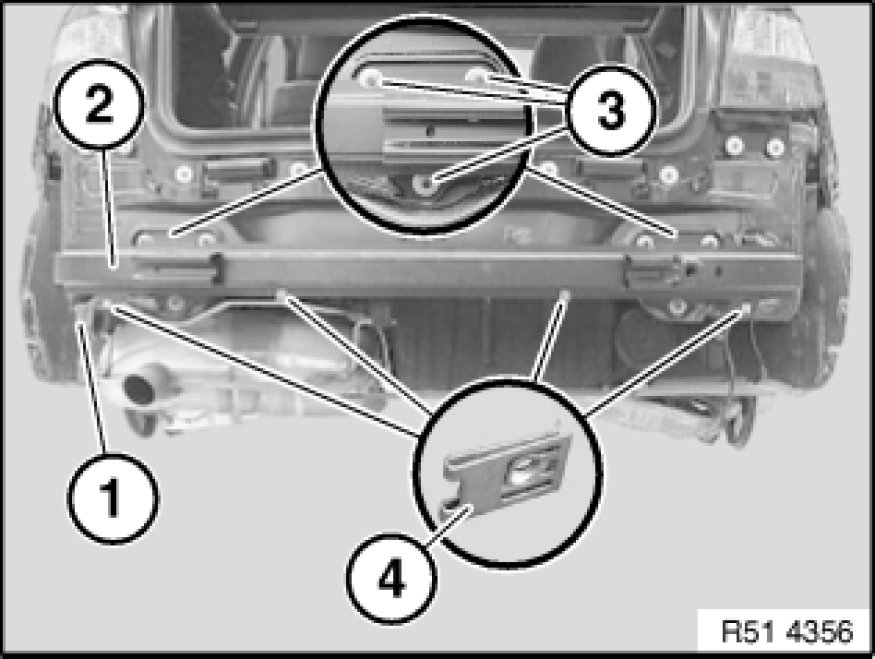

Rear Bumper Reinforcement: Service and Repair
51 12 050 - Removing and installing/replacing carrier for rear bumper trim

Important!
During replacement, all the cavities of the carrier (1) and the crashbox (2) must be sealed with cavity sealant.

Necessary preliminary tasks:
- Remove bumper trim

If necessary, release rubber mount (1) on carrier (2).
Unscrew nuts (3).
Remove carrier (2).
Tightening torque 51 12 1AZ Specifications.
Installation Note:
If necessary, replace faulty sheet nuts (4).
Replacement:
If necessary, modify or replace weight on carrier (2).